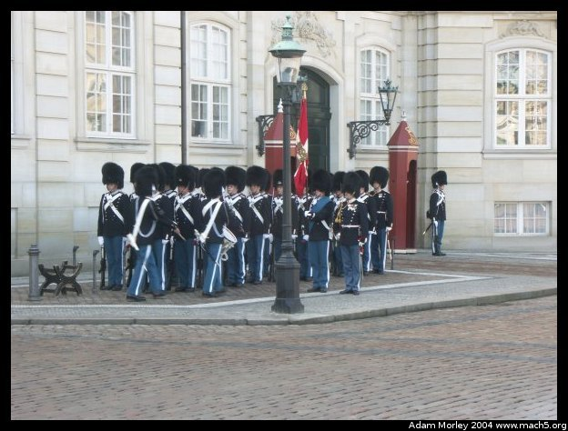
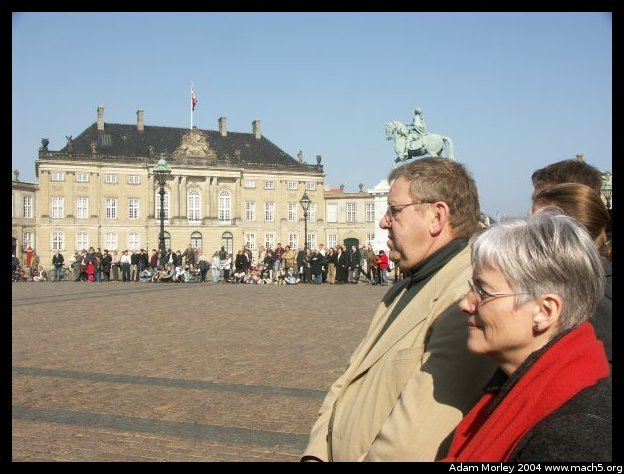

Denmark saw Spring for the first time at the beginning of March. When my friends Rachel and Anna visited, it was still a tad bit cold. By mid-March it was beginning to warm up, and the national TV station even did a little "here comes Spring" special complete with some rather cute Danish actors in shorts and other forms of Spring wear.
It wasn't as warm as they made it look. The woman in the red came by bike. With a basket on the front, and a Swedish chocolate bar in the basket. Quite fine.
The day started out as a normal Wednesday (2004-03-17) does for a DIS student. No classes, but instead what are called, "Field Studies" which is a fancy name for field trip, which means fun fun fun!
The day started off with a visit to the Danish Labor Court, which is the institution set up to resolve disputes between unions and corporations. It stands as an exceedingly functional entity with the capability to resolve disputes and mediate negotiations in a quick, timely and effective manner. The room you see is the very same room where court proceedings take place.
But before court there can be negotiation, which takes place here. Danish mediators are internationally famous for their skills in resolving disputes, and their operations at home are no different. Mediators will often hold negotiating parties here at this very table for hours and days on end until compromise is reached. Until a solution can be found. Often, participants end up sleeping just down the hall from here, and awakened by the mediators to further negotiate matters during odd hours.

Having seen the guard change before, I watched for a few more minutes.Before I forget, I am reminded that I saw this bathroom at the Labor Court. The label says, "Men and Women." I wouldn't say that co-ed bathrooms were common in Denmark, but they weren't uncommon either. Not rare, but not plentiful. Not everywhere, but some places. You get the idea.

But back to the changing of the guard, or shall we say, the crowd?I'm fairly certain he's not from Denmark.
The second picture will become important later. You see, they were trying to film for TV2, but they were where the guard was going to be shortly, so the police had to move them out of the way. More on them later.
Even the school kids get to watch. They probably go to school downtown, but they could've come down special. I've often seen groups of school kids get on the buses together with their teacher. With an extensive public transit system, school buses aren't needed. At least not so much in DK.
I keep telling people they just dress different over there.
But they still have the funny camera face of, "Who are they and why am I being photographed?"
Those chaps we saw earlier? Here they are again. Ole said they looked like TV2 personalities, so our collective guess was some sort of springtime hoopla, or lead up to the royal wedding.
The man in the foreground has an Italian sweater, fashionable jeans, Puma shoes (all the rage), and a keychain from somewhere in Germany.
Young folks.

The harbor bus. It's like a bus, but on water! It even has a rear deck where you can eat ice cream cones. You know this because there is a cute little sign that says no eating ice cream cones inside, but a sign that says it's okay to eat ice cream cones outside. Obviously, no words, just little icons with lines or no lines.
The new opera house. It takes cantilevered to a whole new level. It is across the harbor from the four houses that make up the royal residence.
The Black Diamond. This is the main branch of the Royal Library. The building is even more amazing from the inside. It floors me how well the old building was integrated into the new building.
This is a ship that was found in a bog in the Schleswig-Holstein region (remember the trip to Flensborg and the Duborg School?). This is a good overview of the ship itself, and details on it. Suffice it to say that the ship is normally in Germany, but was brought up on a truck in a custom container to Copenhagen for an exhibit at the National Museum. They lifted the boat over the outer wall into the courtyard and then built a structure around it. Then they unpacked. A few months later, they did the reverse, and the boat went back on another truck. I believe there is some dispute over who really "owns" the boat, but that's somewhat fuzzy. What still amazes me was that the centuries old boat was kept intact over a long journey and then lifted over the top of a museum, and put down in the courtyard. The pictures are unreal.
The boat is back in Germany, so you will have to go there to see it. ;-)
Adam can be reached at adam dot morley at gmail dot com